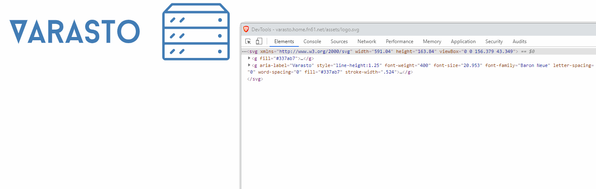

Quick primer on SVG paths
SVG, or Scalable Vector Graphics, is a file format for vector drawings. I had a problem to solve - I wanted to animate an SVG from JavaScript. I’ll describe how and what I learned on how SVG paths work to solve my problem.
The problem
I wanted to animate Varasto’s vector logo - to make the “hard drive LEDs” (the circles on the right) toggleable on/off individually:
The path to the solution
Understanding the structure of the drawing
Browsers can draw & debug SVG natively. I opened the SVG in Brave to begin understanding how the image is made up:

I identified the <path> element that contains the LEDs. The problem is that the same element
contains a bunch of other stuff too.
Maybe I can break the LEDs away from the larger path into three more paths (one for each invividual LED), so instead of:
<path d="all the stuff" />
I want this:
<path d="most of the stuff" />
<path d="led 1" />
<path d="led 2" />
<path d="led 3" />
How does the path element work?
It looks like garbage:
<path d="M142.4 25.604a1.218 1.218 0 000-2.435 1.218 1.218 0 000 2.435zM111.586 25.822l1.778-1.778c.3-.302.3-.793 0-1.093a.771.771 0 00-.546-.224.77.77 0 00-.545.224l-1.779 1.779a.767.767 0 000 1.092.79.79 0 001.092 0z..."/>
I read the tutorials (mentioned in Additional reading) to understand, that this is a highly-compressed form that we can expand to make it easier to understand. There might be tools for this (I tried to quickly find but came up short) but I did this by hand.
The above is the same as:
M 142.4 25.604
a 1.218 1.218 0 000-2.435 1.218 1.218 0 000 2.435
z
M 111.586 25.822
l 1.778-1.778
c .3-.302.3-.793 0-1.093
a .771.771 0 00-.546-.224.77.77 0 00-.545.224
l -1.779 1.779
a .767.767 0 000 1.092.79.79 0 001.092 0
z
... lots of more
What do those letters mean?
For each letter, reading from the tutorial I built a quick reference for myself:
UPPERCASE = absolute coordinate
lowercase = relative coordinate
m = move
a = arc
l = line to
c = cubic curve
z = (close path) draw line from last point to first
Identifying code for the LEDs
Now having prettified the whole path and understanding something about the letters, I began to see the a pattern for the circles:
- Move to coordinates
- Draw arc
- Close path
- This doesn’t seem to be required though - I tried removing this and the image didn’t change at all.
So, the code for each LED looked like this:
M 142.4 25.604
a 1.218 1.218 0 000-2.435 1.218 1.218 0 000 2.435
z
I verified this by removing that piece of code and reloading the page in browser:
The result
Now it was just a matter of moving the code for the LEDs to separate paths, and giving each element an ID (so I can control them from JavaScript).
Here’s the new SVG (some parts omitted):
<svg xmlns="http://www.w3.org/2000/svg" width="591.04" height="163.84" viewBox="0 0 156.379 43.349">
<g fill="#337ab7">
<path id="ledTop" d="M142.4 15.402a 1.217 1.217 0 000-2.433 1.218 1.218 0 000 2.432z" />
<path id="ledMiddle" d="M142.4 25.604a 1.217 1.217 0 000-2.433 1.218 1.218 0 000 2.432z" />
<path id="ledBottom" d="M142.4 35.673a 1.217 1.217 0 000-2.433 1.218 1.218 0 000 2.432z" />
<path d="original with led elements removed.."/>
<path d="original unchanged.."/>
</g>
</svg>
And here’s a proof of concept JavaScript for animating:
const leds = {
top: document.querySelector('#ledTop'),
middle: document.querySelector('#ledMiddle'),
bottom: document.querySelector('#ledBottom'),
}
const randomLedState = (chance) => Math.random() < chance/100;
const ledVisibility = (el, visible) => { el.style.visibility = visible ? 'visible' : 'hidden'; }
setInterval(() => {
ledVisibility(leds.top, randomLedState(75));
ledVisibility(leds.middle, randomLedState(50));
ledVisibility(leds.bottom, randomLedState(25));
}, 100);
And here’s how it looks:
Looks pretty badass, if I can say so myself.
Additional reading

Thanks for reading! 😍
If you like my writing, consider following me on Twitter.
Stay updated on my blog posts & projects - sign up for
my newsletter. 🚀
No spam, unsubscribe any time.
RSS also available.